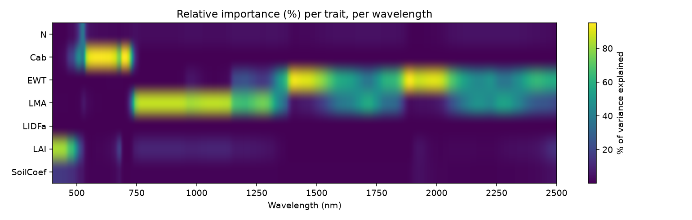
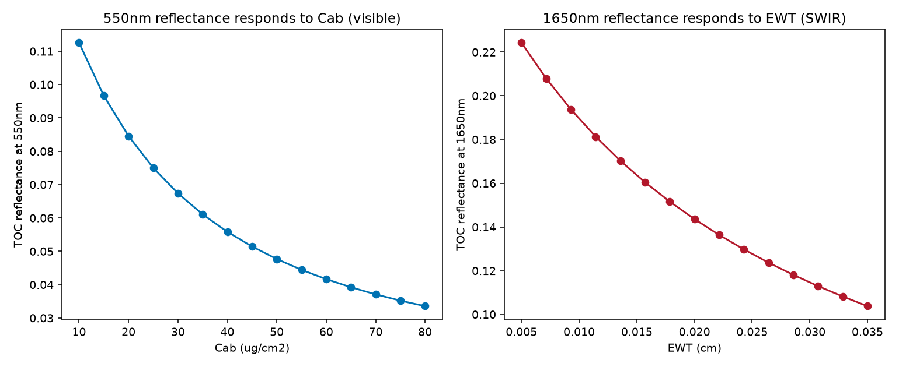

10. Sensitivity Analysis
What you will learn
How to quantify which traits actually drive reflectance variance, at which wavelengths – not just eyeball a sweep.
How to read a wavelength x trait sensitivity heatmap.
Why sensitivity is meaningless outside a trait’s own physical absorption region, and how to spot that in real output.
Concept
Chapters 04 and 09 swept one trait at a time and watched reflectance (or
an index) respond – useful, but it only shows that a trait matters,
not how much, relative to every other trait, at every wavelength, when
everything varies at once. spectral_sensitivity()
runs the canopy model many times with every trait varying simultaneously
(Uniform-sampled by default) and computes, at each wavelength, each
trait’s relative contribution to the resulting reflectance variance
(a Johnson relative-importance index, normalized to sum to 100% per
wavelength).
Python tools used
Function |
Key arguments |
|---|---|
|
Run the example
import numpy as np
from toolsrtm.sensitivity import spectral_sensitivity
result = spectral_sensitivity(n_samples=500, distribution="Uniform",
traits=("N", "Cab", "EWT", "LMA", "LIDFa", "LAI"),
wl_step=5, seed=11)
wls = np.unique(result.wavelength)
traits = list(dict.fromkeys(result.trait)) # includes the auto-added SoilCoef
at_550 = {tr: round(float(result.sti_pct[(result.wavelength == 550) & (result.trait == tr)][0]), 1)
for tr in traits}
at_1650 = {tr: round(float(result.sti_pct[(result.wavelength == 1650) & (result.trait == tr)][0]), 1)
for tr in traits}
print("At 550nm (visible):", at_550)
print("At 1650nm (SWIR):", at_1650)
Result
Printed output (exact, deterministic):
At 550nm (visible): {'N': 5.1, 'Cab': 90.8, 'EWT': 0.2, 'LMA': 1.7, 'LIDFa': 0.3, 'LAI': 1.0, 'SoilCoef': 0.9}
At 1650nm (SWIR): {'N': 4.0, 'Cab': 0.0, 'EWT': 52.5, 'LMA': 42.7, 'LIDFa': 0.0, 'LAI': 0.2, 'SoilCoef': 0.5}
{kind=link}

Real output: each trait’s relative importance (%), per wavelength. Cab lights up sharply in the visible (500-700nm) and nowhere else; EWT and LMA both light up in the NIR-SWIR, with EWT specifically peaking at the two strongest water-absorption bands (~1450/1950nm) and LMA dominating the broader region between them.
{kind=link}

Real output: single-wavelength reflectance as each trait’s own dominant band responds to it – both decrease monotonically (more absorption -> less reflected light), confirming the heatmap’s regions with a direct, physically interpretable response curve.
Interpretation
At 550nm, Cab alone explains 90.8% of reflectance variance – every
other trait combined explains under 10%. At 1650nm the story flips
completely: Cab’s contribution drops to 0.0%, while EWT (52.5%)
and LMA (42.7%) together explain essentially all of it. This is
exactly the physically expected pattern – chlorophyll absorbs in the
visible and has no direct SWIR absorption feature, while water and dry
matter absorb in the SWIR and barely touch the visible – and it’s the
right way to read this kind of analysis: a trait’s sensitivity is only
meaningful within its own physical absorption region. A tool reporting
high Cab sensitivity at 1650nm, or high EWT sensitivity at
550nm, would be signalling a bug, not a real result – which is exactly
why this page shows the full heatmap rather than cherry-picking numbers
that happen to look sensible.
Try it yourself
Read the heatmap at ~1200nm (a genuine ambiguity zone) and check that no single trait dominates the way
Cab/EWTdo at 550/1650nm – a real region of low trait separability.Re-run with
distribution="Gaussian"and compare the heatmap – the overall pattern should be similar, since it reflects the underlying physics, not the sampling scheme.Increase
n_samples(e.g. to 2000) and confirm the 550nm/1650nm numbers above barely change – a sign 500 samples was already enough to trust.
Common mistakes
Sensitivity results only make sense within a trait’s physical absorption region – don’t over-interpret small (<5%) values outside it as meaningful signal; they’re sampling noise around zero.
spectral_sensitivityreruns the canopy modeln_samplestimes – costly at highn_samples/finewl_step; start coarse (wl_step=10or more) while exploring, then refine.A trait explaining a high % of variance doesn’t mean it’s easy to retrieve – see 04. Canopy Radiative Transfer Models’s LAI-saturation discussion for a case where high sensitivity at low trait values coexists with very poor separability at high trait values.
Next
Part III starts here: LUT Generation – building the training data every inversion method (LUT matching, ML, DL) needs.
Using R? -> ToolsRTM Tutorial 10: Sensitivity Analysis